- 최초로 일반에 열린 DALL.E2가 공개된 지 얼마 지나지 않아 사용을 시작했습니다.
- Midjourney도 잠시 써봤다가, bing image creator에서 한참을 그리다가,
- ideogram에서 글자도 쓰다가 요즘은 ChatGPT + DALL.E3에 정착했습니다.
- 그림을 보는 것만큼 그리는 것을 좋아하는 일반인 입장에서 생성형 AI를 쓸 때의 느낌을 남겨봅니다.
1. 그림을 좋아합니다.
- 어려서부터 집에는 그림책이 많았습니다.
- 그 중에서도 전 세계 주요 미술관 전집이 있어 어려서부터 책장을 넘기며 놀았습니다.
- 밖에 나가 놀기보다 자리에 앉아 노는 성향이 더해져 자연스럽게 그림이 취미가 되었습니다.
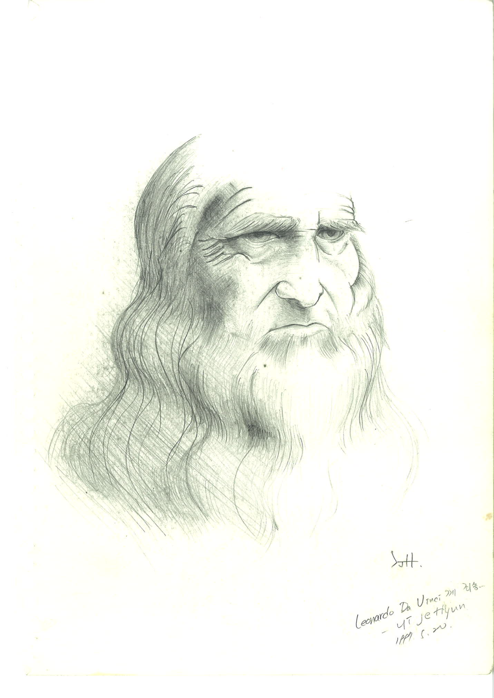
- 내 그림으로 인해 친구들이 깔깔거리며 웃으면 그것도 좋았습니다.
- 정식으로 그림을 그리기보다 문제집 한 귀퉁이나 이면지에 끄적인 것이 대부분입니다.
- 그림을 제대로 배운 적도 없었기 때문에 스스로 그린 그림을 낙서라고 불렀습니다.
- 스마트폰이 나온 이후 그림을 그리기 더 좋아졌습니다.
- 전철이든 버스든 그림을 끊기지 않고 계속 그릴 수 있었고 채색이 자유로워졌기 때문입니다.
- 크리스마스처럼 그림을 보내야 하는 시즌엔 더 즐거웠습니다.
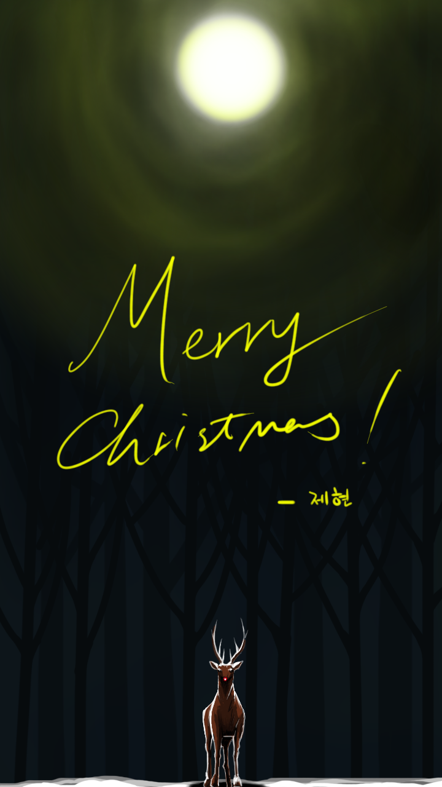
- 누군가에게 말하기 힘든 기분을 남몰래 그림에 담는 횟수가 늘었습니다.
- 아래 그림에 담긴 좌절감과 절망감은 저만 알고 있습니다.
- 한 번에 과감하게 그리지 못하고 수정을 많이 합니다.
- 그러다 보니 매번 스케치북이 물을 먹어 구멍이 뚫려서 중학교 미술선생님으로부터 이런 말씀도 들었습니다.
- “제현이는 아이디어는 좋은데 색칠하다가 망쳐”
- 아무리 수정을 해도 문제가 없는 스마트폰 그림은 그 자체로 자유로 다가왔고
- 처음엔 여러 레이어를 겹쳐 그리다 나중에는 웬만하면 한 레이어에서 그렸습니다.
- 레이어에 맡기고 게을러지는 자신을 발견한 후 단행한, 연습의 일환이었습니다.
2. Generative AI
- 2021년 1월 OpenAI가 DALL.E를 공개했을 때 충격을 받았습니다.
- 학습의 결과물이라고 보기에 AI의 창의성이 놀라웠습니다.
- 마침 창작은 기존 지식의 조합이라고 믿고 있었기 때문에 자연스럽게 받아들일 수 있었습니다.
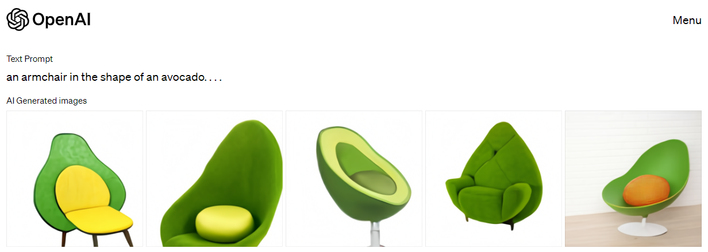
“An armchair in the shape of an avocado”
- DALL.E2가 사용권이 열리자 마자 기쁜 마음으로 여러 그림을 그렸습니다.
- 거부감따위 없었고, 손그림에서 폰그림으로 이어진 도구의 연장선이라는 생각.
- 그리고 그림을 그리고 싶어도 시간이 너무 들어서 그리기 어려울 때가 있었습니다만
- 시간의 제약이 사라졌다는 즐거움이 매우 컸습니다.
- 그리고 이 생각은 지금도 마찬가지입니다.
“a whale-shaped metal keyring on wooden table, 3D art”
- 이상한 변호사 우영우 오프닝의 고래 열쇠고리가 맘에 들어서 순식간에 그리기도 했습니다.
- 예전 같으면 머리 속에만 여러 이미지가 떠다니다가 결국 못 그리고 사라졌을 일입니다.
- midjourney에도 강한 매력을 느꼈습니다.
- 같은 프롬프트를 입력해도 DALL.E보다 더 멋진 그림이 만들어졌고, 독특한 스타일에 매력을 느꼈습니다.
| 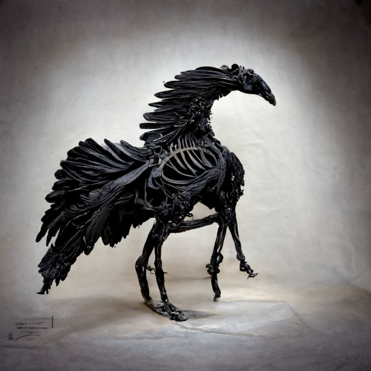 | 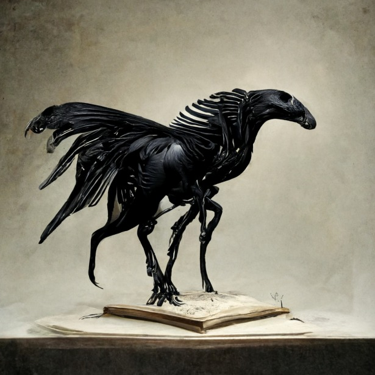 |
| 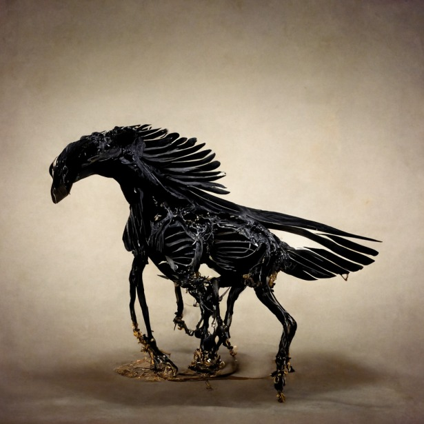 | 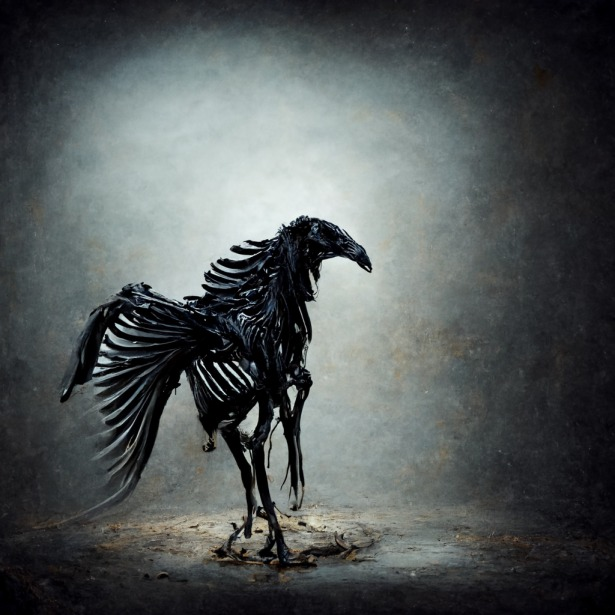 |
“a black pegasus of which white bones are exposed.”
- 생성AI로 그림을 그리며 즐거워하는 건 저 뿐만은 아니었습니다.
- 딱히 수고를 들이지 않아도 생성AI로 만든 그림들을 쉽게 찾아볼 수 있었습니다.
- 대부분 아름다운 여인이나 고흐의 화풍을 따라한 그림이었는데 비슷한 그림들이 너무 많다보니 피로감이 몰려왔습니다.
- 남들이 다 하면 왠지 하기 싫어서 베스트셀러도 읽지 않는 성격입니다.
- 비슷한 그림을 그린다면 내 그림이 존재할 이유가 없다는 생각에 의도적으로 다른 그림들을 그렸습니다.
“a photo of a medieval wanderer entering into a thick forest along a tracking road”
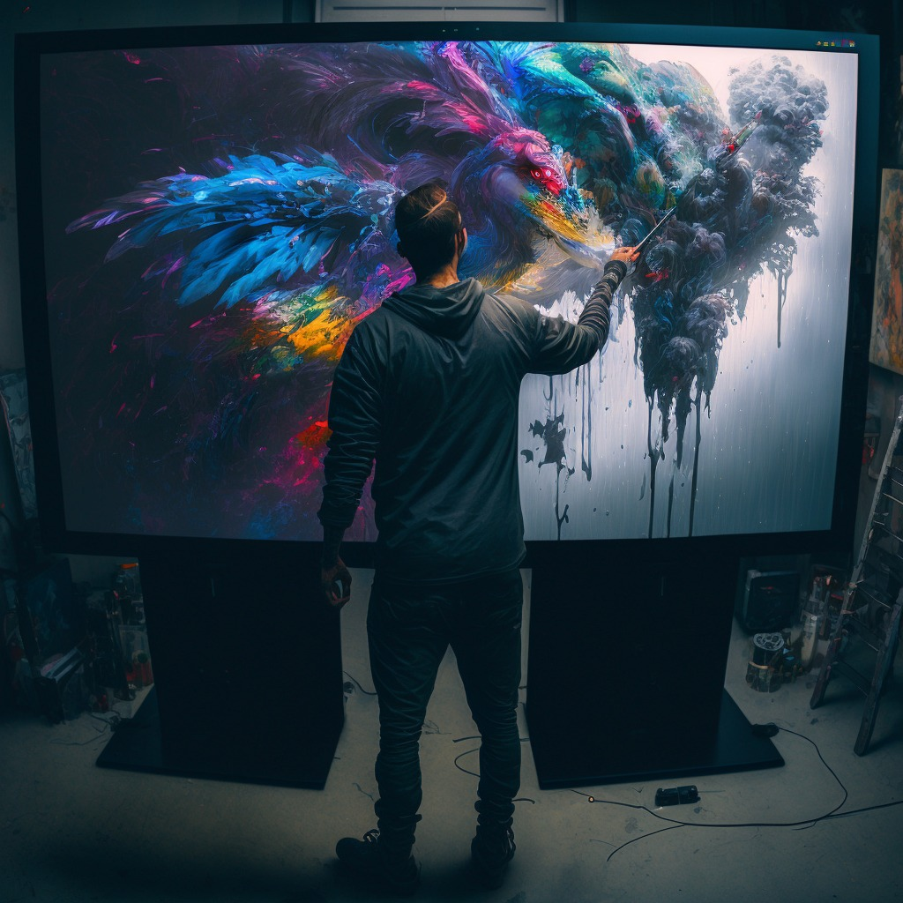
“an artist, standing in front of a big monitor as huge as wall, painting the wall with various colors, holding a brush on his right hand, view from his back”
- “draw a man, not photo-realistic, holding a brush on his right hand upwards, on top of the mountain, looking down the land below.”
- “desaturate image, as a blue tone, the man should be dark while the sky and land should be bright, as if the light comes from the front.”
- “his right hand needs to be upward, holding a brush towards the sky.”
- 남성의 뒷모습이 많습니다.
- Stable Diffusion을 중심으로 여성을 집중적으로 그리는 것에 대한 반감이 드러났고
- 제가 주로 쓰던 DALL.E가 사람 얼굴을 제대로 그리지 못했기 때문입니다.
- 머리 속에 떠오른 이미지를 옮기려는 노력을 많이 했습니다.
- 그 결과 프롬프트가 조금씩 길어졌습니다.
3. AI와의 협업
- 생성형 AI는 글이나 그림이나 운에 크게 의존할 수 밖에 없습니다.
- 애초에 그림의 모든 구성 요소를 몇 단어, 몇 문장으로 표현하는 것이 불가능하기 때문입니다.
- 큰 틀은 프롬프트로 제시하지만 디테일은 AI에게 맡기는 스타일의 작업을 하게 됩니다.
- 르네상스 시절에도 스승이 밑그림을 그리면 제자가 세부를 맡아 채웠습니다.
- 레오나르도 다빈치는 베로키오의 문하에서, 미켈란젤로는 기를란다요의 작업을 함께 했습니다.
- 위 그림 왼쪽 아래 천사는 문하생 시절의 레오나르도 다 빈치가 그렸습니다.
- 루벤스는 공방 수준을 넘어선 공장을 운영했다고도 알려져 있습니다.
- 오늘날 AI로 그림을 그리는 방식이 이와 다르지 않다고 느낍니다.
- 그런데 제자나 조수가 말귀를 알아듣지 못하면 답답합니다.
- 비슷하게, 어떻게 지시를 해도 AI가 그리지 못할 때는 무척이나 답답합니다.
- 저만 그런 것은 아니었는지, 페블러스의 이주행 대표께서 공모(?)를 했습니다. (원글 링크)
- DALL.E, Midjourney, Stable Diffusion으로 모두 시도하다 실패한 끝에,
- 공개된지 얼마 되지 않은 ControlNet을 사용해서 겨우 성공했습니다.
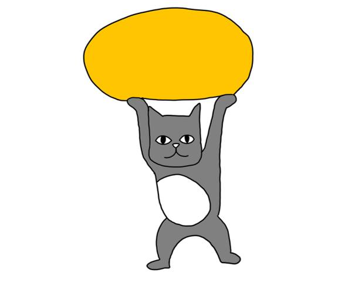 2023.02.17. 페블러스의 고양이 (밑그림: 좌측), Stable Diffusion with ControlNet
“a cat supporting orange stone over its head.”
- 입력받은 밑그림을 바탕으로 그리는 ControlNet은 그간의 갈증을 씻어주었습니다.
- 머리 속 구도를 거의 그대로 끄집어낼 수 있게 되었기 때문에 우연에의 의존이 크게 줄었고
- 원하는 부분만 지정해서 생성하기가 훨씬 쉬워졌습니다. 프롬프트도 많이 줄었습니다.
| 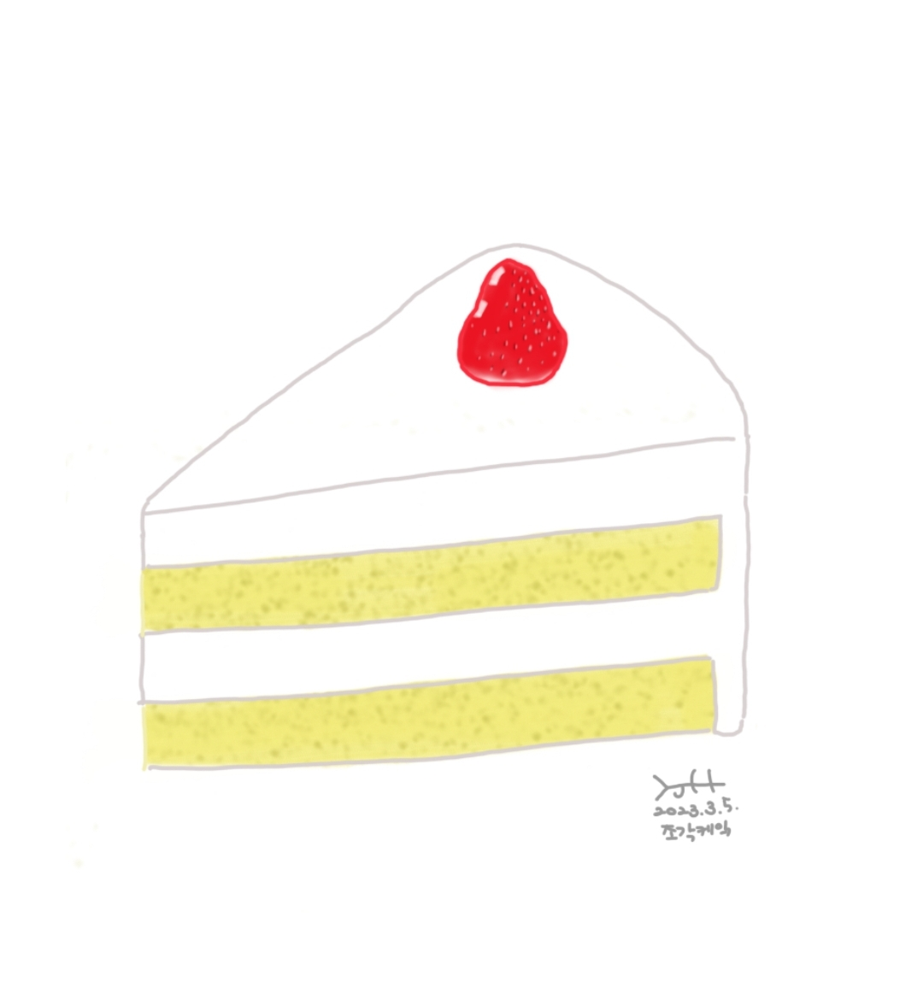 | 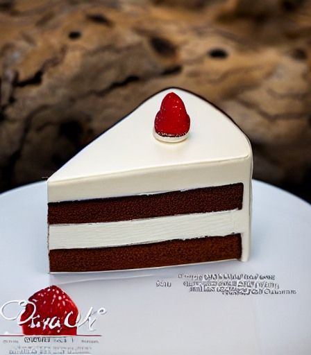 |
| 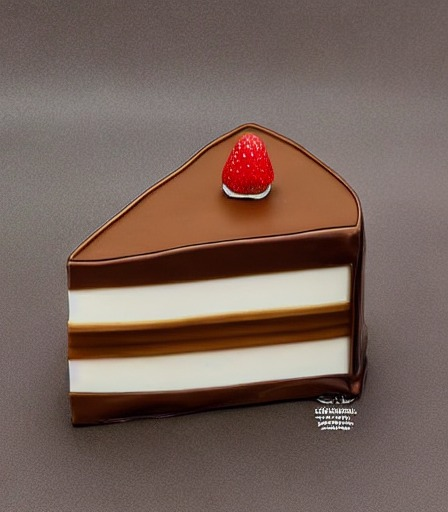 | 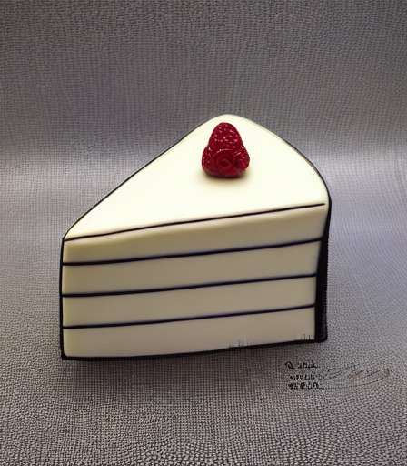 |
“a piece of cake and a strawberry on it.”
- 게임체인저가 될 것이라고 예상한 바와 같이 디자인 전문가들이 이 기술을 바탕으로 대거 유입되었습니다.
- 반면 Stable diffusion을 사용해야 한다는 점 + GPU 여유가 없다는 점,
- huggingface가 제공하는 UI가 다소 번잡하다는 점,
- 그리고 밑그림을 그리면 시간이 소요된다는 점에서 정작 저는 생각보다 손을 덜 뻗게 되었습니다.
4. AI로 그림을 그린다는 것
- 몇 마디 말로 정교한 그림을 그려낼 수 있다는 것은 참으로 매력적입니다.
- 특히 AI가 개입하는 영역에서 내가 생각하지 못한 구성과 디테일이 등장하는 걸 볼 때면, 클라이언트보다 클라이언트 마음을 더 잘 아는 디자이너와 함께 일하는 기분이 들기도 합니다.
- 여전히 학습되지 않은 그림, 또는 제작사가 위험하다고 규정한 그림을 그리지 못하지만,
- 이 안에서도 상상력을 펼치기에는 크게 부족함이 없습니다.
- 이런 면에서 제게는 Stable Diffusion에 기반한 ControlNet보다 DALL.E2가 진화한 bing image creator가 제게는 게임체인저였습니다.
- 브라우저만 있으면 20초 안에 멋진 그림을 하루에 400개(과거 100 boosts x 4장. 현재 15 boosts)씩 그릴 수 있기 때문에
- 과거 일과 일 사이 머리를 식힐 때 순간순간의 감정을 배설하던 습관을 다시 살릴 수 있었습니다.
“a full body transparent worker made of water outline with bubbles water drops dividing himself in the air flyinging on the desk, kicking the computer monitor, his head is being splitted into the air, turning into bubbles, dark background with a very very small window on the corner, a part of cloud is seen through the window.”
“tall buildings standing through thick fog, early in tbe morning, sting rays are surfing in the sky, high speed”
“jumping from cliff, diving onto city, parachute bag {packed} on back, drone view”
- 여러 사람들과 단톡방에서 그림으로 하루를 열고 닫으며 한번 더 웃는 것도 큰 즐거움입니다.
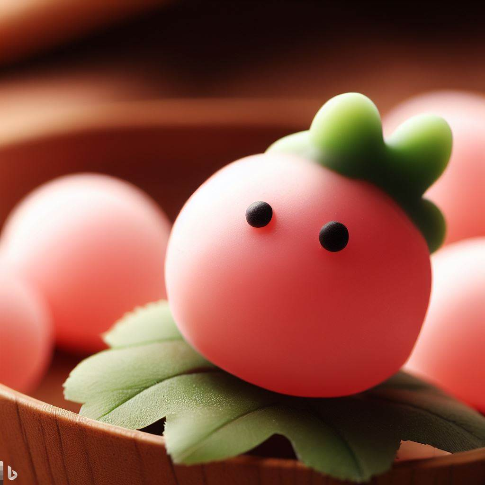
“딸기탕후루”
- 사실 아직도 조금은 어색한 느낌이 있습니다.
- 도구가 연필이건, 볼펜이건, 스마트폰이건 손 끝에서 그림이 그려질 때는 온 신경이 예민해지는 것을 느낍니다.
- 종이를 느끼는 손 끝의 감촉과 이를 보는 내 눈이 핫라인으로 연결된 것이 느껴지고, 머리 속 도면과 끊임없이 대조하느라 의식이 분주합니다.
“tip of a pencil drawing a line on sketchbook. close up to the tip. photography”
그런데 AI에게 그림을 의뢰할 때는 느낌이 다릅니다.
프롬프트를 쓰고 엔터를 누르면 그림이 생성되는 짧은 시간 동안 살짝 머리가 멍해지는 것을 느낍니다.
아무것도 할 수가 없다는 무력감마저 느껴지기도 합니다.
어떤 그림이 나올지 기다리면서, 내가 입력한 프롬프트에 오타는 없는지 다시 읽어봅니다.
모바일로 그릴 때면 오타가 적지 않은데 뒤늦게 한숨을 쉬며 마음을 졸이기도 합니다.
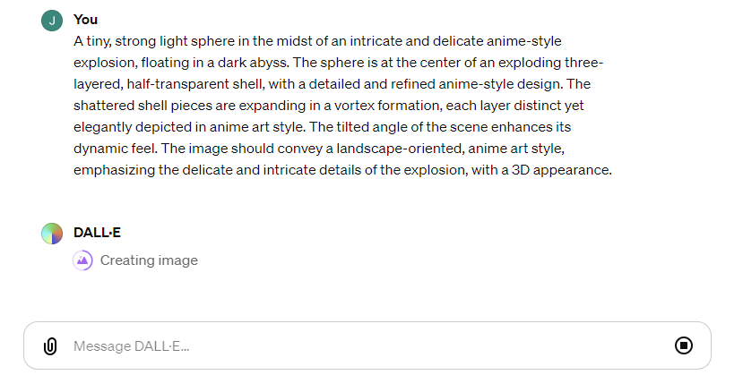ChatGPT에서 DALL.E3를 그릴 수 있게 되면서 내가 입력한 프롬프트가 어떻게 변형되었는지,
image seed number는 어떤 것들이 사용되었는지 알 수 있게 되었습니다.
이를 보면서 프롬프트를 수정하기도 하지만, 프롬프트가 잘 들어갔다고 확신이 되면 여전히 운에 의존해야 합니다.
원하는 그림이 나올때가지 반복실행을 할 때는 이게 맞나 싶기도 하지만, 손으로 그려도 비슷한 경험을 할 때가 있습니다.
 |
|||
“A tiny, strong light sphere in the midst of an intricate and delicate anime-style explosion, floating in a dark abyss. The sphere is at the center of an exploding three-layered, half-transparent shell, with a detailed and refined anime-style design. The shattered shell pieces are expanding in a vortex formation, each layer distinct yet elegantly depicted in anime art style. The tilted angle of the scene enhances its dynamic feel. The image should convey a landscape-oriented, anime art style, emphasizing the delicate and intricate details of the explosion, with a 3D appearance.
5. 마치며
- AI 그림은 두어달 전 DALL.E3와 Midjourney v6의 등장으로 또 한번 진화했습니다.
- AI 그림 도구들이 경쟁할수록 그릴 수 있는 그림의 종류와 표현은 다양해집니다.
- 더 많은 이들이 더 많은 자유를 느끼기를 바랍니다.
“Photography of a smartphone held on a Korean man’s hand. Multicolored {orange-rich and yellow, red} vapor is emerging from the white-glowing screen, forming a trunk of tree of which branches have everything {giant and fairly in bedtime story, goblins and pirates, objects depicting love and friendship} in the air, side view, extreme close up.”